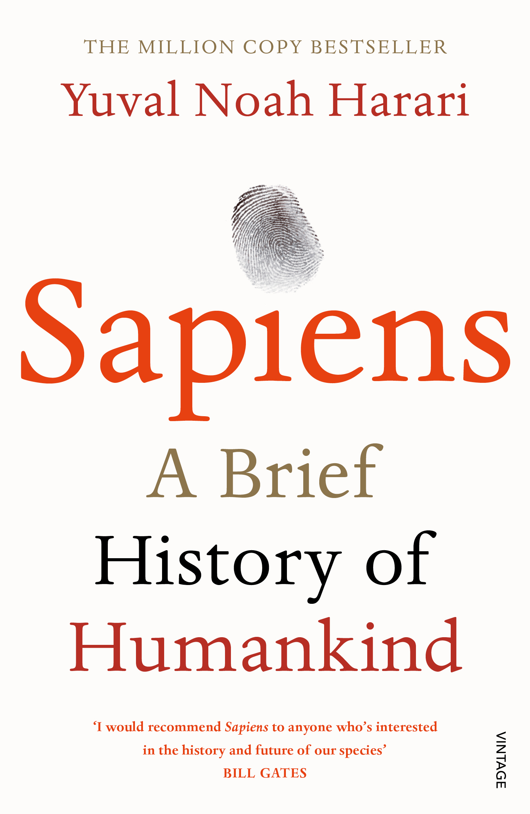

Book Review · Non-fiction · History
Sapiens: A Brief History of Humankind
By Yuval Noah Harari
Sapiens: A Brief History of Humankind is a global best-selling non-fiction book where historian Yuval Noah Harari follows the story of Homo sapiens from small bands of foragers to data-driven modern society. This website shares what the book is about, the ideas that stayed with me, and why it changed the way I look at people, behaviour and marketing.
↓ Read my reviewMy take
Review
Sapiens completely shifted the way I perceive the world around me. Harari zooms out so far that everyday life suddenly looks like part of a much larger experiment: our species’ attempt to organise billions of strangers around shared stories of money, nations, religion and human rights. Reading it made me more confident about gently questioning norms we usually follow without thinking.
It also answered many of my “why are we like this?” questions. Why do we chase careers, brands and growth so obsessively? Why are we both powerful and anxious at the same time? Harari keeps returning to one idea: our unique ability to believe in shared fictions is both our strength and our risk.
The book also looks ahead, asking what the future of humanity might look like when biotechnology and artificial intelligence can shape our bodies, minds and choices. Instead of neat predictions, Harari leaves us with tough questions: if we can upgrade ourselves, who decides what “better” means, and what happens to everyone left out?
The ending is especially thought-provoking. It quietly pushes us to think about the cost of our dominance – on animals, the planet and even our own happiness. I closed the book feeling that our species is clever enough to change almost everything, but still unsure what we really want.
How the book is structured
Harari breaks the story of humankind into broad revolutions. Each part explains how Homo sapiens became the dominant species and what could come next.
1. The Cognitive Revolution
Around 70,000 years ago, humans began to think in more flexible and imaginative ways. This leap in storytelling and belief systems allowed small bands of foragers to coordinate on a much larger scale.
2. The Agricultural Revolution
About 11,000 years ago we shifted from foraging to farming. Food and population grew, but everyday life often became harder. Harari suggests that wheat and livestock may have shaped us as much as we shaped them.
3. The Unification of Humankind
Empires, world religions and trade networks gradually stitched cultures together. Money, laws and shared beliefs acted as invisible glue, allowing millions of strangers to cooperate.
4. The Scientific Revolution
Roughly 500 years ago, societies started openly admitting ignorance and investing in systematic research. This curiosity-driven mindset powered exploration, technology and the rise of modern states and markets.
5. Capitalism & Modern Society
The book then examines capitalism and consumer culture – how credit, growth and constant innovation shaped our values, fuelled the industrial revolution and led into today’s information age.
6. The Future of Humankind
Finally, Harari looks at biotechnology and AI. He imagines the possibility of engineered, “amortal” post-humans and asks whether this could mark the end of Homo sapiens as we know it.
Lines that stayed with me
Quotes from Sapiens
“There are no gods, no nations, no money and no human rights, except in our collective imagination.”
A reminder that the systems we treat as natural are actually human inventions.“The real difference between us and chimpanzees is the mythical glue that binds together large numbers of individuals, families, and groups.”
Language and shared stories become our real superpower.“History began when humans invented gods, and will end when humans become gods.”
The whole journey of the book in one dramatic sentence.“We are more powerful than ever before, but have very little idea what to do with all that power.”
The central tension of modern civilisation.“In the future, the algorithm might know us better than we know ourselves.”
A sharp reminder about data, AI and free will.References used for this review
- Bill Gates, review of Sapiens on Gates Notes.
- The Guardian, “Sapiens: A Brief History of Humankind” review.
- POPAI, “Top 60 Most Insightful Quotes from Sapiens.”